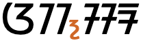

This page brings together basic information about the Sundanese script and its use for the Sundanese language. It aims to provide a brief, descriptive summary of the modern, printed orthography and typographic features, and to advise how to write Sundanese using Unicode.
This page is a work in progress. The information given here should be correct, but needs to be added to and refined further.
Phonological transcriptions on this page should be treated as an approximate guide, only. They are taken from the sources consulted, and may be narrow or broad, phonemic or phonetic, depending on what is available.
Since 1996 the Sundanese script has been the official orthography for the 27 million Sundanese speakers on the island of Java, although the Latin script is also used. It is currently taught in schools and used for public signage.
The modern orthography is derived from the Old Sundanese orthography (Aksara Sunda Kuno) which was used by the Sundanese between the 14th and 18th centuries. It, in turn, derived from the Pallava script.
Sundanese is an abugida, ie. consonants carry an inherent vowel sound that is overridden, where needed, using vowel signs. See the table to the right for a brief overview of features for the modern Sundanese orthography.
Sundanese text runs left to right in horizontal lines.
Words are separated by spaces.
The 18 native consonant letters are supplemented by 7 more used for non-native sounds, such as those from Arabic.
The inherent vowel is a, and other vowels are represented by 6 vowel-signs (including 1 prescript). All vowel-signs are combining marks, and are stored after the base character. There are no composite vowels.
Independent vowels are used for standalone vowel sounds,
Syllable-initial clusters use 3 dedicated combining marks for the second consonant.
Syllable-final consonant sounds are also represented by 3 dedicated combining marks. When a vowel-sign and final consonant are both attached to the same base, they are arranged side by side.
Other consonant clusters are indicated by a visible mark called pamaaeh. There are no stacked consonants or other conjuncts in modern Sundanese, however they were used in the Old Sundanese orthography.
Sundanese has a set of native digits, but uses ASCII punctutation.
Character index
Letters
Show
Basic consonants
ᮕ␣ᮘ␣ᮒ␣ᮓ␣ᮊ␣ᮌ␣ᮎ␣ᮏ␣ᮞ␣ᮠ␣ᮙ␣ᮔ␣ᮑ␣ᮍ␣ᮝ␣ᮛ␣ᮜ␣ᮚ
Extended consonants
ᮟ␣ᮋ␣ᮖ␣ᮗ␣ᮐ␣ᮯ␣ᮮ
Vowels
ᮄ␣ᮅ␣ᮆ␣ᮇ␣ᮈ␣ᮉ␣ᮃ
Not used for modern Sundanese
ᮺ␣ᮻ␣ᮼ␣ᮽ␣ᮾ␣ᮿ
Combining marks
Show
Vowels
ᮦ␣ᮤ␣ᮥ␣ᮧ␣ᮨ␣ᮩ
Medials
ᮢ␣ᮣ␣ᮡ
Finals
ᮀ␣ᮁ␣ᮂ
Other
᮪
Not used for modern Sundanese
᮫␣ᮬ␣ᮭ
Numbers
Show᮰␣᮱␣᮲␣᮳␣᮴␣᮵␣᮶␣᮷␣᮸␣᮹
Punctuation
Show(␣)␣,␣.␣:␣;␣?␣!
Not used for modern Sundanese
᳀␣᳁␣᳂␣᳃␣᳄␣᳅␣᳆␣᳇
Items to show in lists
Phonology
These are sounds for the Sundanese language.
Click on the sounds to reveal locations in this document where they are mentioned.
Phones in a lighter colour are non-native or allophones. Source Wikipedia.
Vowel sounds
Consonant sounds
labial
dental
alveolar
post-
alveolar
palatal
velar
uvular
glottal
stop
pb
td
kɡ
q
affricate
t͡ʃd͡ʒ
k͡s
fricative
fv
sz
x
h
nasal
m
n
ɲ
ŋ
approximant
w
l
j
trill/flap
r
Structure
An orthographic syllable in modern Sundanese can be described as one of
C {y,r,l} {vs} {ng,r,h}
Cp
V {ng,r,h}
where C is a consonant and V is an independent vowel, y,r,l represents a medial combining character, vs a vowel-sign, ng,r,h a syllable-final combining character, and p a vowel-killer.
Vowels
Click on the characters in the lists for detailed information.
Inherent vowel
a following a consonant is not written, but is seen as an inherent part of the consonant letter, so ka is written by simply using the consonant letter ᮊ [U+1B8A SUNDANESE LETTER KA].
Sundanese vowel-signs are all combining characters, and a single character is used per base consonant. All vowel-signs are stored after the base consonant, and the font puts them in the correct place for display.
Two vowel-signs are spacing marks, meaning that they consume horizontal space when added to a base consonant.
Prescript vowel-sign
One vowel-sign appears to the left of the base consonant letter or cluster.
ᮦ
This is a combining mark that is always stored after the base consonant. The font places the glyph before the base consonant.
Prescript vowel-sign panaelaeng.
Vowel absence
In modern Sundanese writing suppressed inherent vowels are indicated by either
Sundanese represents standalone vowels using a set of independent vowel letters, eg. ᮅᮃᮕ᮪ The set includes a character to represent the inherent vowel sound.
ᮄ␣ᮅ␣ᮆ␣ᮇ␣ᮈ␣ᮉ␣ᮃ
Independent vowels can carry syllable-final consonants, eg. ᮃᮀᮊᮥᮒᮔ᮪.
Consonants
Click on the characters in the lists for detailed information.
Basic consonants
The Sundanese block has 18 consonant letters for indigenous sounds in modern Sundanese writing.
Stops
ᮕ␣ᮘ␣ᮒ␣ᮓ␣ᮊ␣ᮌ
Affricates
ᮎ␣ᮏ
Fricatives
ᮞ␣ᮠ
Nasals
ᮙ␣ᮔ␣ᮑ␣ᮍ
Other sonorants
ᮝ␣ᮛ␣ᮜ␣ᮚ
Repertoire extension
An extended set of consonants is used to represent non-native sounds, eg. Arabic.
ᮟ␣ᮋ␣ᮖ␣ᮗ␣ᮐ␣ᮯ␣ᮮ
Consonant clusters
Syllable-initial clusters
Syllable-initial consonant clusters allow 3 sounds after the initial consonant, j, r, or l. These are all represented using dedicated combining marks (see medials).
Other consonant clusters
In modern Sundanese the absence of a vowel sound between two consonants is shown using a visible vowel killer ᮪[U+1BAA SUNDANESE SIGN PAMAAEH]. This produces no special conjunct forms.

The word aksara, showing pamaaeh vowel killer.
Old Sundanese
Historical Sundanese does have conjunct forms. They can be produced using the invisible ᮫U+1BAB SUNDANESE SIGN VIRAMA. The following shows known conjuncts:os
For reproduction of Old Sundanese writing there are 5 additional characters:
ᮻ␣ᮼ␣ᮽ␣ᮾ␣ᮿ
Numbers
Digits
Sundanese uses native digits, which are decimal-based and used in the same way as European numerals.
᮰␣᮱␣᮲␣᮳␣᮴␣᮵␣᮶␣᮷␣᮸␣᮹
To help distinguish the digits from other characters | [U+007C VERTICAL LINE] is used around numbers.
Vertical bars are used to distinguish numbers.
Observation: Unlike other punctuation, the vertical lines don't appear to be slanted to the right, and in the Noto Sans font this produces an effect that looks like the vertical line is ligated with some of the digits, eg. |᮷|.
This section brings together information about the following topics:
writing styles;
cursive text;
context-based shaping;
context-based positioning;
baselines, line height, etc.;
font styles;
case & other character transforms.
According to Everson, hyphenation can occur after any full orthographic syllable, but there are no details about how that works.
Text alignment & justification
tbd
Letter spacing
tbd
Counters, lists, etc.
tbd
Styling initials
tbd
Page & book layout
This section is for any features that are specific to Sundanese and that relate to the following topics:
general page layout & progression;
grids & tables;
notes, footnotes, etc;
forms & user interaction;
page numbering, running headers, etc.
Languages using the Sundanese script
According to ScriptSource, the Sundanese script is used for the following language: